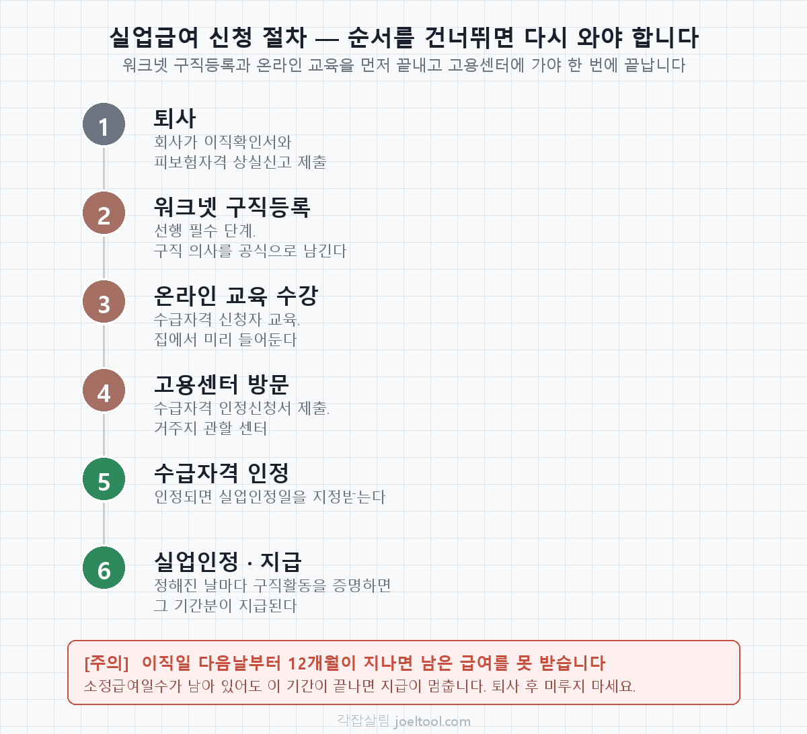

실업급여 신청 방법 — 절차·서류·기간 총정리
실업급여에서 사람들이 가장 많이 헤매는 건 금액이 아니라 순서입니다. 퇴사하고 바로 고용센터에 갔다가 "워크넷 구직등록부터 하고 오세요"라는 말을 듣고 돌아오는 경우가 흔합니다. 순서만 알면 한 번에 끝납니다.

1단계 — 회사가 이직확인서를 냅니다
내가 먼저 할 일이 아니라 회사가 할 일입니다. 회사는 퇴사자의 피보험자격 상실신고와 이직확인서를 처리해야 하고, 이 처리가 끝나야 고용센터에서 내 이력을 조회할 수 있습니다.
여기서 시간이 밀리는 경우가 많습니다. 회사가 급여 마감에 맞춰 한 달에 한 번 몰아서 처리하면 그만큼 늦어집니다. 퇴사 전에 "이직확인서 언제 처리해주시나요"를 한 번 물어두는 것만으로 2~3주를 아낄 수 있습니다.
2단계 — 워크넷 구직등록 (선행 필수)
실업급여는 "일할 의사가 있는데 취업이 안 된 사람"에게 주는 돈입니다. 그 의사를 공식적으로 남기는 절차가 워크넷 구직등록입니다. 이게 안 되어 있으면 수급자격 신청 자체가 진행되지 않습니다.
이력서를 형식만 채워 올리면 나중에 문제가 될 수 있습니다. 구직활동을 증명할 때 이 등록 내용이 기준이 되므로, 실제로 지원할 만한 직종과 희망 조건으로 채우는 편이 낫습니다.
3단계 — 수급자격 신청자 온라인 교육
고용센터에 가기 전에 집에서 미리 듣는 교육입니다. 실업급여 제도, 실업인정 방법, 부정수급 사례를 설명합니다. 듣지 않고 센터에 가면 그 자리에서 듣거나 다시 와야 합니다.
4단계 — 고용센터 방문, 수급자격 인정신청
거주지 관할 고용복지플러스센터에 방문해 수급자격 인정신청서를 제출합니다. 관할이 아닌 곳에 가면 처리되지 않으니 주소지 기준으로 확인하고 가세요.
챙겨갈 것
| 항목 | 내용 |
|---|---|
| 신분증 | 주민등록증·운전면허증 등 |
| 수급자격 인정신청서 | 센터에서 작성하거나 미리 받아서 작성 |
| 본인 명의 통장 | 급여를 받을 계좌 |
| 이직 사유 증빙 | 자발적 퇴사인데 정당한 사유를 주장할 때 필요 (임금명세서, 근로계약서, 메신저 기록 등) |
이직확인서와 고용보험 가입이력은 이미 전산에 있으므로 따로 챙길 필요가 없습니다. 다만 회사가 아직 처리를 안 했다면 그 자리에서 확인이 안 되니, 2단계 전에 조회해두는 게 좋습니다.
5단계 — 대기기간 7일
수급자격이 인정돼도 바로 돈이 들어오지 않습니다. 실업 신고일부터 7일간은 대기기간으로, 이 기간에는 구직급여가 지급되지 않습니다. 이건 모든 수급자에게 똑같이 적용됩니다.
6단계 — 실업인정을 받아야 지급됩니다
실업급여는 한 번에 다 나오지 않습니다. 정해진 실업인정일마다 그동안 구직활동을 했다는 것을 증명하면, 그 기간에 해당하는 금액만 지급됩니다. 증명이 안 되면 그 회차는 지급되지 않습니다.
구직활동으로 인정되는 것
- 입사지원 — 가장 확실합니다. 지원 내역이 남는 경로로 하세요.
- 면접 참여
- 고용센터가 지정한 직업훈련·취업특강 수강
- 직업심리검사·취업상담 — 회차별로 인정 범위가 다릅니다.
인정 횟수와 범위는 실업인정 회차와 연령에 따라 달라집니다. 1차와 이후 회차의 기준이 다르고, 반복 수급자는 더 엄격해집니다. 정확한 기준은 수급자격 인정 때 받는 안내문이 우선이니 그것을 따르세요.
권고사직과 해고, 실업급여에서 뭐가 다른가
실업급여 관점에서 둘 다 비자발적 이직이라 수급 대상입니다. 차이는 절차와 회사가 지는 부담에 있습니다.
| 구분 | 권고사직 | 해고 |
|---|---|---|
| 형식 | 회사가 권하고 근로자가 동의해 그만둠 | 회사가 일방적으로 근로관계를 끝냄 |
| 실업급여 | 수급 대상 | 수급 대상 |
| 해고예고수당 | 해당 없음(합의 퇴사) | 30일 전 예고 없으면 30일분 통상임금 |
| 부당함 다투기 | 동의했으므로 어려움 | 부당해고 구제신청 가능 |
신청하면 언제 입금되나요
순서를 따라가면 이렇게 됩니다.
- 회사의 이직확인서 처리 — 여기가 가장 오래 걸립니다. 회사에 따라 며칠에서 몇 주.
- 수급자격 인정 — 고용센터 방문 후 심사. 사유가 단순하면 빠릅니다.
- 대기기간 7일 — 이 기간분은 지급되지 않습니다.
- 첫 실업인정 — 이때 비로소 첫 지급이 이뤄집니다.
즉 퇴사한 날부터 첫 입금까지는 최소 몇 주가 걸립니다. 회사가 이직확인서를 늦게 내면 그만큼 더 밀립니다. 퇴사 후 생활비 계획을 세울 때 이 공백을 반드시 감안해야 합니다.
이후로는 정해진 실업인정일마다 그 기간분이 지급됩니다. 한 번에 몰아서 나오는 것이 아니라 회차별로 나눠 들어옵니다.
가장 자주 놓치는 것 — 12개월 제한
신청 자체에 마감일은 없지만, 이직일 다음 날부터 12개월이 지나면 남은 급여를 받을 수 없습니다. 소정급여일수가 240일 남아 있어도 이 12개월이 끝나면 지급이 멈춥니다.
예를 들어 소정급여일수가 240일인데 퇴사 후 7개월을 미루다 신청하면, 남은 5개월(약 150일) 동안만 받고 나머지는 사라집니다. 퇴사하면 일단 신청부터 해두는 것이 원칙입니다.
얼마를 받는지 먼저 계산해보세요
절차를 밟기 전에 금액을 알고 있으면 계획을 세우기 쉽습니다. 퇴사 전 월급과 고용보험 가입기간만 넣으면 1일 지급액과 받는 날수, 총액이 나옵니다.
2026년 기준 1일 상한 68,100원 · 하한 66,048원, 소정급여일수 120~270일로 계산합니다.
퇴사일을 아직 안 정했다면 퇴사 타이밍 계산기에서 퇴직금과 연차를 다 챙기는 날짜를 먼저 잡는 편이 낫습니다. 실업급여는 퇴사 이후의 문제지만, 퇴직금과 연차수당은 퇴사일 하루로 갈립니다.